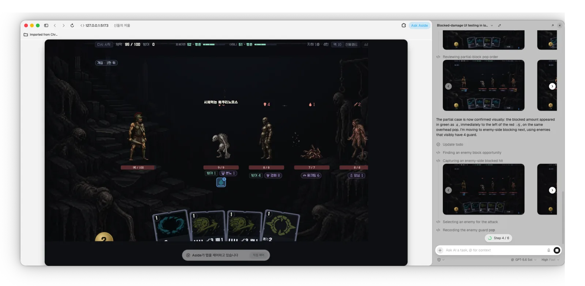
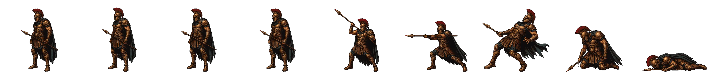
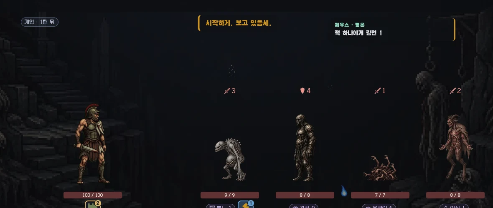

2026.08.04 ~ 08.10 · 7일 · 1인 · github.com/Bongseop-Kim/god-scales
이 문서에 적힌 경로와 수치는 저장소에서 그대로 확인된다
Core
7일, 혼자서 — 에셋 생성부터 밸런스까지 AI로
음성, 스프라이트, 카드 일러스트, 배경, 신 일러스트까지 게임에 들어간 에셋 전부를 혼자 AI로 만들었다. 카드 179장 · 은혜 45종 · 적 19종 · 신 조합 10개가 얽히는 덱빌딩은 나올 수 있는 시나리오를 사람 손으로 다 재볼 수 없는 규모라, 밸런스는 LLM과 봇 시뮬레이션 수만 런으로 맞췄다.
그래서 이 문서의 실제 주제는 검증이다 — AI에게 시킨 모든 작업에 검증 단계를 붙인다는 원칙 하나로 7일을 버텼다.
Overview
숫자로 보는 7일
7일기획→배포 전 과정 · 1인
87건plan 소비 = 리뷰 문서
133건CodeRabbit 지적 PR 15개
204개테스트 승률 게이트 포함
64,000봇 시뮬 런 6회차
538개AI 생성 에셋 이미지·음성·영상
두 신을 후원자로 모시고 12층을 오르는 덱빌딩 로그라이크. 카드 179 · 은혜 45 · 적 19 · 신 5(조합 10) — 이 콘텐츠 전부가 아래에서 설명할 파이프라인의 산출물이다. 플레이: bongseop-kim.github.io/god-scales
Agenda
목차
01
LLM 하네스
plan·리뷰 워크플로 · 규범 문서 · AI 상호 리뷰
02
콘텐츠 · 검증 파이프라인
LLM이 만들고, 에이전트가 플레이하고, 게이트가 판정한다
03
이미지 생성 파이프라인
프롬프트가 코드고, 실패담도 문서다
04
TTS 파이프라인
로컬 TTS 448줄, 그리고 남은 아쉬움
Overview
일곱 영역 — 만든 것은 AI, 지킨 것은 게이트
Workflow
plan을 쓰고, 리뷰를 남기고, 커밋한다
plan
완료 정의 · 검증 계획 선기록
→
수행
게이트·테스트가 반려
→
review
실측 기록 · plan 삭제
→
commit
CodeRabbit 자동 리뷰
plan에는 검증 섹션이 반드시 들어간다 — 무엇이 되면 끝인지 측정 전에 적어 두면, AI가 결과에 맞춰 목표를 고쳐 쓰지 못한다
리뷰는 감상이 아니라 수치다 — 에셋 배선(P-37)의 번들 무게 681.50MiB → 2.39MiB처럼 전후 실측이 남는다
리뷰 문서가 그대로 작업 이력이다 — reviews/00-index.md 한 줄이 작업 하나. 사람도, 다음 턴의 LLM도 인덱스만 읽으면 7일 전체를 따라갈 수 있다
Harness
규범 문서가 곧 하네스다
커밋·푸시·PR 금지. 사용자가 그 턴에 시킬 때만.
`plans/NN-*.md` 수행이 끝나면 `reviews/NN-*.md`에 리뷰를 남기고 해당 plan 파일을 삭제한다.
밸런스 게이트는 조합 승률 하한 하나. 새 지표·밴드·회차 비교를 만들지 않고,
통과 못 하는 값을 테스트에 넣지도 깎지도 않는다.
브라우저 확인·E2E는 `aside` CLI로만 한다.
게임에 들어가는 한글 텍스트(대사·카드·요구·UI)를 쓰거나 고칠 때는 `WRITING.md`를 먼저 읽고 따른다.
UI·레이아웃·애니메이션을 만들거나 고칠 때는 `UI.md`를 먼저 읽고 따른다.
CLAUDE.md 전문 — 상시 지시는 이 여섯 줄이 전부다. 규범은 파일로 쪼개 그 작업을 할 때만 읽는다. 상시 컨텍스트는 가볍게 유지되고, 규범을 한 번 고치면 이후 모든 작업에 적용된다.
WRITING.md
신별 문체를 종결어미 단위로 잠근다 — 대사에서 이름을 지워도 어미만으로 누군지 알 수 있어야 한다. 아테나만 존댓말, 요구 수치는 한글 수사로만.
UI.md
「레이아웃은 움직이지 않는다」 — 조건부 컴포넌트는 자리를 남기고, 애니메이션은 transform·opacity만 쓴다.
DEPLOY.md
배포 전 게이트 목록 — 테스트 · 밸런스 하한 · 번들 무게 · E2E 완주. 절차가 문서라서 어느 턴의 AI가 배포해도 같은 게이트를 지난다.
AGENTS.md
CLAUDE.md의 심링크다. Claude Code든 다른 코딩 에이전트든 같은 헌법을 읽는다 — 도구를 바꿔도 하네스는 그대로다.
문서 밖의 하네스는 둘 — plan 난이도에 따라 reasoning effort를 조절하고, 스킬은 최소주의 ponytail 하나만 얹는다(다음 장). 도구를 늘리는 대신 문서와 게이트를 늘리는 쪽을 골랐다.
Cross Review
AI가 쓴 것은 AI가 다시 본다 — 잡는 리뷰, 덜어내는 리뷰
사람 리뷰어가 없는 대신 리뷰를 둘로 나눴다. 검토 AI(CodeRabbit)는 잘못을 잡고, 최소주의 스킬(ponytail)은 군더더기를 덜어낸다 — 서로 다른 눈 둘이 작성 AI를 이중으로 본다.
coderabbitai[bot] · PR #11 · reviews/00-index.md
🟠 MajorRestore the bundle size gate before marking P-57 as passed. — 4.42MiB > 4MiB 상한. 리뷰 문서가 “초과는 이 작업 전부터”라고 넘어가려던 것을 잡았다. 대응은 은폐가 아니라 재측정 — 첫 화면 실측(988KiB)으로 상한이 재던 것이 틀렸음을 밝히고 근거와 함께 상한을 옮겼다.
MinorThe recorded measurements do not match ui/style.css. — 리뷰 문서의 수치까지 코드와 대조한다. AI가 쓴 기록과 AI가 쓴 코드가 서로를 검증하는 구조라, 측정값을 적당히 적으면 여기서 걸린다.
덜어내는 리뷰의 실물 — ponytail로 다시 보게 하자 테스트 픽스처가 400줄 → 24줄이 됐고(R-41), 코드 곳곳의 // ponytail: 주석 8곳이 “왜 이만큼만 만들었는지”를 남긴다 — 짧은 코드는 리뷰도 유지보수도 싸다
멀티에이전트 하네스는 써 보고 뺐다 — 토큰을 과하게 쓰고 간단한 해법을 우회하는 경향이 보여, 도구를 늘리는 대신 검증을 늘리는 쪽을 골랐다
Content Pipeline
카드 179장 · 적 19종 — 게임 데이터도 LLM이 만들었다
2장에서 말한 카드 179장이 여기서 나온다. 카드·적·요구·층 배치 같은 게임 데이터 자체를 LLM이 대량 생성했다. 생성물을 그대로 넣으면 스키마 오류 하나, 중복 한 장이 게임을 조용히 깨뜨리기 때문에 중간에 검증기 validate.ts를 세웠다 — 통과분만 게임에 들어가므로 수백 개 데이터를 사람이 한 장씩 검수하지 않아도 된다.
실측 — 제우스 카드 30장 생성 → 20장 통과, 반려 10장은 반려 사유를 입력에 붙여 재생성 → 7장 통과, 최종 27장 반영 (logs/generation/card-v1-zeus.md)
여기까지는 정적 검사다 — 스키마는 걸러도 게임이 되는지는 모른다. 다음 세 장은 게임을 대신 플레이하는 에이전트 이야기다.
Browser Agent
게임을 조작하는 AI — 방식부터 골랐다
방식
원리
특성
컴퓨터 유즈 (Anthropic) CUA (OpenAI)
스크린샷을 보고 마우스·키보드를 직접 움직인다
사람과 같은 입력이라 어떤 화면이든 되지만, 매 걸음 모델 추론이 필요해 느리고 흔들린다
브라우저 에이전트
DOM·접근성 트리를 읽고 조작한다
빠르고 결정론적 · 좌표와 상태를 숫자로 실측한다 — 대신 화면이 어떻게 보이는지는 모른다
이 프로젝트 — 하이브리드
조작·측정은 DOM으로, 판정이 시각일 때만 스크린샷
모델 없는 조작 스크립트는 비용 0 · 시각 버그는 스크린샷으로 잡는다
브라우저 조작은 aside CLI 하나로 통일했다(CLAUDE.md 헌법의 한 줄). UI를 바꿀 때마다 1440×900에서 가로 넘침·빈 칸·기하를 DOM으로 실측했고 — 리뷰 문서의 「Aside 확인」 절이 그 기록 — HUD·화면 버그 대부분이 사람 눈에 닿기 전에 여기서 잡혔다.

하이브리드의 실물 — DOM 조작으로 「방어 4를 가진 적」 상황을 스스로 만들고, 초록 방어량 4가 빨간 −5 왼쪽에 뜨는 것을 스크린샷으로 판정하는 중.
Play Data · E2E
에이전트가 플레이하고, 통계가 함께 배포된다
밸런스 데이터의 몸통은 봇 시뮬이다 — 규칙 봇 하나를 ε=0(강한 판)과 ε=0.45(사람 근사 판)로 두 번 돌려 조합 10개를 잰다. 그 위에 에이전트가 DOM 진짜 클릭으로 플레이해 사람 흐름의 로그를 보탠다 — 이번 제출 검증에서도 시드 7·42·313 세 런(승 2 · 패 1)을 플레이해 logs/human/aside-v1/에 남겼고, CLI가 한 결정도 바꾸지 않고 그대로 재생했다
같은 방식의 12층 완주 E2E가 plan 검증 단계에 상시로 돈다 — 모델 없는 DOM 조작 스크립트가 진짜 클릭만으로 완주하고, 반출 JSON을 CLI 재생과 대조해 결정열이 한 자리라도 다르면 실패한다 (tools/e2e.ts)
코드가 main에 머지되면 CI가 층화 2,000런을 자동으로 돌려 stats.json을 새로 만들고 게임과 함께 배포한다 — 변경이 밸런스에 미친 영향을 stats.html에서 바로 본다 ↓
카드 수치·적 체력 같은 밸런스 숫자는 LLM이 제안하고 고쳤다 — 판정은 사람의 감이 아니라 npm run tune: 앞 장의 봇 플레이 수만 런으로 조합 승률을 재고, 하한 5%를 못 넘는 변경은 테스트가 반려한다
게이트가 하나인 이유 — 지표가 늘면 AI가 지표 쪽으로 최적화한다. 통과 못 하는 값을 테스트에 넣지도, 기준을 깎지도 않는다. 신 적 HP 140이 하한에 걸렸을 때 LLM이 고친 것은 규칙이 아니라 숫자였다(HP 100)
제출 시점 npm run tune, 규칙 봇 ε=0 기준. 같은 봇을 ε=0.45로 낮춘 판보다 10조합 전부 높다 — 잘하면 오르는 게임이라는 증거.
Image Pipeline
이미지 83장 전부 AI 생성 — 프롬프트가 코드다
① 생성 원본
크로마키째 보존 · 요청 JSON과 프롬프트가 같은 폴더에
→
② 프레임 분해
idle 4 · attack 2 · hit · death
→
③ qa 접촉시트
실물 보고 반려 · qa-notes.md · palette.lock.json
→
④ 배포 스트립
art --check 대조 · 위반 0

정지 이미지(카드 일러 30 · 배경 6 · 신 일러 5 · 프롭 14 · UI 프레임)는 GPT-image 2.0, 움직이는 스프라이트 20종은 sprite-gen으로 39런 — 도구를 이미지 성격에 따라 나눴다. 스프라이트 쪽 구조는 다음 장에서
실패담 — 해상도 소실 사고: 문서의 「규격 480×300」(화면 표시 크기)이 파일 크기 지시로 읽혀 -resize가 생성 원본을 깎았다. 재발 방지 규칙 넷을 art/README.md에 남겼다 — 원본 무축소 · 파일/화면 숫자 표기 분리 · 변환 입출력 경로 분리 · 원본은 _src/에
Image Pipeline · sprite-gen
sprite-gen — 확률적 생성기를 결정론적 계약으로 묶는다
스프라이트 20종 · 39런. 엔진은 component-row, 생성 백엔드는 codex — 한 캔버스에 상태별 포즈 N개를 나란히 생성하고(같은 그림 안의 일관성이 나눠 생성한 것보다 강하다) 크로마 키로 배경을 지워 프레임을 오려낸다.
런마다 이 sprite-request.json 하나가 셀 규격·여백·프레임 수를 단독 소유하고, 프롬프트·가이드·추출·아틀라스가 전부 여기서 파생된다 — 수치가 코드에 하드코딩되지 않는다
크로마 키는 자동 선택 — 베이스 이미지를 샘플링해 캐릭터 팔레트와 가장 먼 색을 고른다(위 예시는 cyan · 거리 점수 231). 대신 캐릭터가 크로마 인접색을 못 쓰는 제약이 생긴다
선언한 프레임 수와 오려낸 조각 수가 다르면 그 줄은 폐기·재생성 — 확률적 생성기를 결정론적 계약에 맞추는 rejection sampling이고, §2 콘텐츠 게이트와 같은 원리다. 39런 전부 요청 JSON·프롬프트·원본·프레임·qa-notes.md가 같은 폴더에 남아 재추적된다
Image Pipeline · Next
다음 단계 — 오려내는 파이프라인에서 조건을 거는 파이프라인으로
지금 — sprite-gen
다음 — ComfyUI
제어 지점
API 레이어 — 프롬프트 문장으로 부탁한다
모델 레이어 — 조건으로 강제한다
정체성
참조 이미지 + 텍스트
LoRA · IP-Adapter
포즈
레이아웃 가이드 이미지
ControlNet (스켈레톤·뎁스)
프레임 분리
생성 후 크로마 키로 오려냄
처음부터 개별 생성 — 오려낼 것이 없다
재현성
없음 — 같은 요청도 다른 그림
seed 고정으로 픽셀 재현 · 회귀 테스트 가능
이번 규모(7일 · 스프라이트 20종)에서는 GPU도 모델 학습도 없이 API 호출만으로 완주하는 지금 방식이 합리적이었다 — 캐릭터가 늘거나 픽셀 재현성이 요구되는 순간 ComfyUI가 이긴다
갈아탈 때 남는 것은 코드가 아니라 계약이다 — 요청 JSON(SSoT) · 검증 게이트 · 프레임 좌표 매니페스트는 그대로 가고, 기술적으로 가장 공들인 프레임 추출이 가장 먼저 버려진다. 그래서 지금도 투자는 추출 로직이 아니라 계약 쪽에 쌓았다
TTS Pipeline
대사 448줄을 로컬 TTS로 — 그리고 남은 아쉬움
gods.json
대사 448줄
→
tools/tts.py
Qwen3-TTS 1.7B · 신별 화자·톤
→
{해시}.m4a
FNV-1a · 증분 재생성
→
speak()
호출부 7곳
① 스모크 테스트
본 생성 전에 신별 한 줄씩 뽑아 억양을 귀로 확인했다. 화자는 WRITING.md의 성격 표에 맞춰 골랐다 — 제우스는 노련한 저음, 아테나만 존댓말, 아르테미스는 한국어 네이티브 화자.
② 해시 패리티 테스트
텍스트가 바뀌면 파일명이 바뀌어 매니페스트 없이 증분 재생성된다. 파이썬(생성)과 TypeScript(재생)가 같은 해시를 내는지 vitest가 고정값으로 잠근다(test/tts.test.ts). 어긋나면 침묵이 아니라 테스트 실패로 드러난다.

그 448줄이 게임에서 재생되는 장면 — 전투에 들어서면 제우스의 「시작하게. 보고 있음세.」가 말풍선과 함께 speak()로 흘러나온다. 아쉬움도 남는다: 시간에 쫓겨 화자 탐색을 기본 화자 다섯에서 멈췄다. VoiceDesign으로 신별 음색을 새로 설계했다면 캐릭터에 더 붙는 목소리가 나왔을 것이다. BGM 2곡 · 컷인 영상 5개는 Gemini로 만들었고, API 비용은 전부 0원이다.